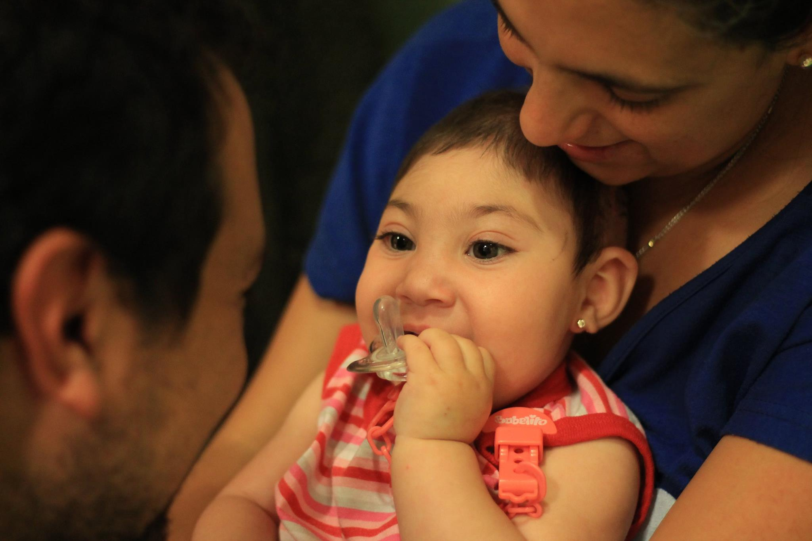
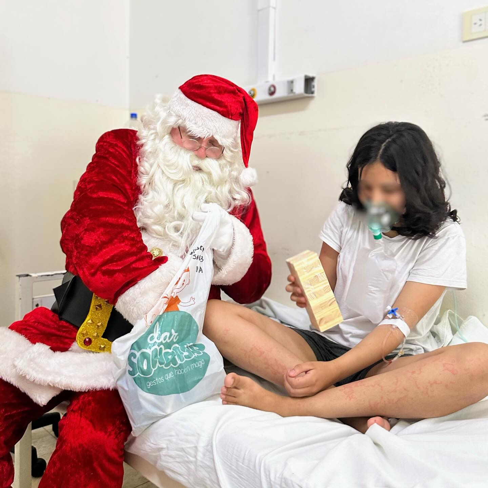
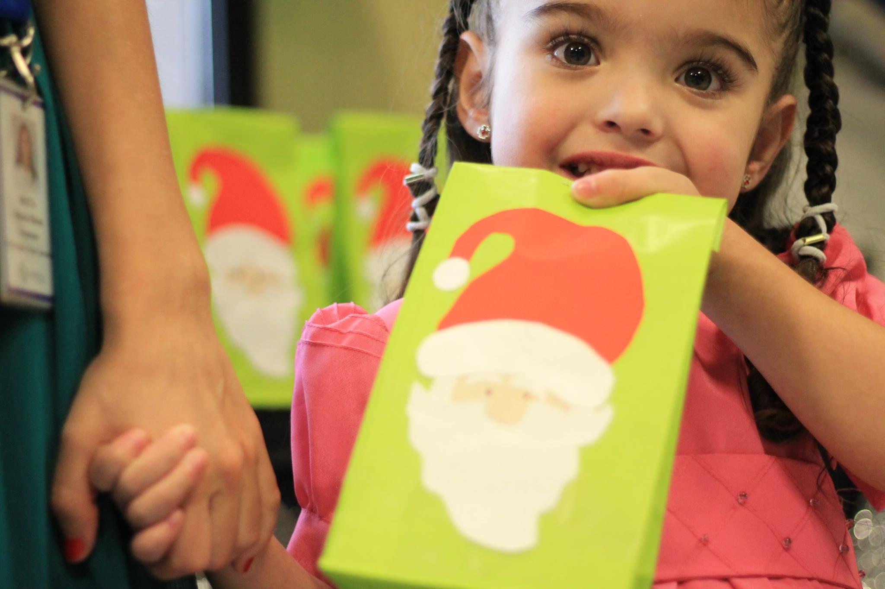

Proyectos en marcha

Hospital FLENI
Llevamos actividades recreativas a los hospitales para llenar de sonrisas los días de los niños en tratamiento.

Navidad
Llevamos actividades recreativas a los hospitales para llenar de sonrisas los días de los niños en tratamiento.

Dia del Niño
Llevamos actividades recreativas a los hospitales para llenar de sonrisas los días de los niños en tratamiento.

Talleres Recreativos
Brindamos talleres donde los niños pueden hacer actividades y alivianar su carga emocional.